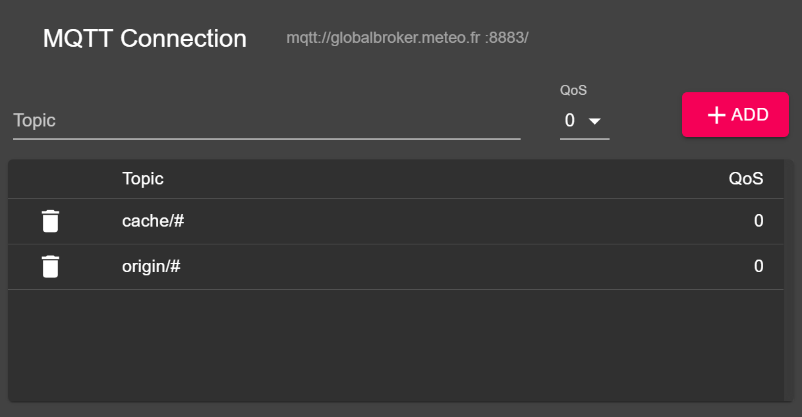

WIS2 in a box training
WIS2 in a box (wis2box) is a Free and Open Source (FOSS) Reference Implementation of a WMO WIS2 node. The project provides a plug and play toolset to ingest, process, and publish weather/climate/water data using standards-based approaches in alignment with the WIS2 principles. wis2box also provides access to all data in the WIS2 network. wis2box is designed to have a low barrier to entry for data providers, providing enabling infrastructure and services for data discovery, access, and visualization.
This training provides step-by-step explanations of various aspects of the wis2box project as well as a number of exercises to help you publish and download data from WIS2. The training is provided in the form of overview presentations as well as hands-on practical exercises.
Participants will be able to work with sample test data and metadata, as well as integrate their own data and metadata.
This training covers a wide range of topics (install/setup/configuration, publishing/downloading data, etc.).
Navigation
The left hand navigation provides a table of contents for the entire training.
The right hand navigation provides a table of concents for a specific page.
Prerequisites
Knowledge
- Basic Linux commands (see the cheatsheet)
- Basic knowledge of networking and Internet protocols
Software
This training requires the following tools:
- An instance running Ubuntu OS with Docker and docker-composer (see training-environment)
- SSH client to access your instance
- MQTT Explorer on your local machine
Goals and learning outcomes
The goals of this training are to become familiar with the following:
- WIS2 concepts and core functions and components
- Required and optional functions of a WIS2 Node
- WIS2 in a box architecture and environment
- data and metadata formats used in WIS2 for discovery and access
- wis2box core functions:
- sending data
- registering as a WIS2 Node
- downloading data from broker
- monitoring operations
Conventions
Question
A section marked like this invites you to answer a question.
Also you will notice tips and notes sections within the text:
Tip
Tips share help on how to best achieve tasks.
Note
Notes provide additional information on the topic covered by the practical session, as well as how to best achieve tasks.
Examples are indicated as follows:
Configuration
1 2 3 4 | |
Snippets which need to be typed in a on a terminal/console are indicated as:
echo 'Hello world'
Training location and materials
This training is always provided live at https://training.wis2box.wis.wmo.int.
The training contents, wiki and issue tracker are managed on GitHub at https://github.com/wmo-im/wis2box-training.
Printing the material
This training can be exported to PDF. To save or print this training material, go to the print page, and select File > Print > Save as PDF.
Exercise materials
Exercise materials can be downloaded from the exercise-materials.zip zipfile.
Support
For issues/bugs/suggestions or improvements/contributions to this training, please use the GitHub issue tracker.
All wis2box bugs, enhancements and issues can be reported on GitHub.
For additional support of questions, please contact wis@wmo.int.
As always, wis2box core documentation can always be found at https://docs.wis2box.wis.wmo.int.
Contributions are always encouraged and welcome!
Overviews
The following presentations provide conceptual overviews presented during the training:
Practical sessions ↵
Connecting to WIS2 over MQTT
Introduction
WIS2 uses the MQTT protocol to advertise the availability of weather/climate/water data. The WIS2 Global Broker subscribes to all WIS2 Nodes in the network and republishes the messages it receives. The Global Cache subscribes to the Global Broker, downloads the data in the message and then republishes the message on the cache topic with a new URL. The Global Discovery Catalogue publishes discovery metadata from the Broker and provides a search API.
As part of the WIS2 Pilot Phase in 2023, Météo-France is running a Global Broker. In this practical session you will learn how to use the MQTT Explorer tool to review the topics available on this Global Broker and be able to display WIS2 notification messages.
Using MQTT Explorer to connect to the Global Broker
One way to view messages published by this Global Broker is using the MQTT Explorer which can be downloaded from the MQTT Explorer website.
Open MQTT Explorer and add a new connection as follows:

Click on the 'ADVANCED' button and add the following topics to subscribe to:

Note
When setting up MQTT subscriptions you can use the following wildcards:
- Single-level (+): a single-level wildcard replaces one topic level
- Multi-level (#): a multi-level wildcard replaces multiple topic levels
Click 'BACK', then 'SAVE' to save your connection and subscription details. Then click 'CONNECT':
At this point, the following should appear in the MQTT Explorer session:

You are now ready to start exploring the WIS2 topics and message structure and answer the following questions:
Question
How can we distinguish the originating country providing the data? How many countries are sharing data?
Question
Find the latest message received in the following topic:
origin/a/wis2/mwi/malawi_wmo_demo/data/core/weather/surface-based-observations/synop
What is the the value of the URL from which we can download the data in .bufr format?
Question
Find the latest message received on the following topic:
cache/a/wis2/mwi/malawi_wmo_demo/data/core/weather/surface-based-observations/synop
What is the URL we can use to download the data? What is the difference between this URL and the URL in the previous question?
Question
How does the WIS2 message define the location where the data was observed? And how you can determine the time that the data was published?
Note
MQTT Explorer is a helpful tool to review the topic structure for a given MQTT broker and visually work with the MQTT protocol. There exist many MQTT client and server software. To work with MQTT programatically (for example, in Python), paho-mqtt can be used to connect to an MQTT broker and process incoming messages.
Conclusion
Congratulations!
Congratulations! In this practical session, you learned:
- how to subscribe to the WIS2 Global Broker from Météo-France using MQTT Explorer
- the WIS2 topic structure
- the WIS2 notification message structure
- the difference between Global Broker messages published on the
originandcachetopics
Access your student VM
Introduction
In this session you will ensure you can connect to your student VM, check pre-installed software and download the exercise materials.
As part of locally run wis2box training sessions, you can access your personal student VM on the local training network named "WIS2-training".
If you want to run this training outside of a local training session, you can provide your own instance as detailed in the training environment overview.
Connect to your student VM on the local training network
Use the following configuraiton to connect your PC on the local WiFi broadcasted in the room during WIS2 training:
- SSID: WIS2-training
- password: dataismagic!
Use an SSH client to connect to your student VM using the following:
- Host: country-lastname.wis2box.training (replace with your country and lastname)
- Port: 22
- Username: lastname (replace with your lastname)
- Password: namibia2023
Tip
Contact a trainer if you are unsure about the hostname or have issues connecting.
Once connected, please change your password to ensure others cannot access your VM:
limper@student-vm:~$ passwd
Changing password for limper.
Current password:
New password:
Retype new password:
passwd: password updated successfully
Verify software versions
Your student VM comes with Python, Docker and Docker Compose pre-installed.
Check docker version:
docker --version
Docker version 20.10.17, build 100c701
Check Docker Compose version:
docker-compose --version
docker-compose version 1.29.2, build unknown
Check Python version:
python3 --version
Python 3.8.10
Run docker 'hello-world'
In the local training environment, your student account has been added to the docker group to allow you to work with Docker. You can verify this by running the Docker hello-world image:
docker run -it hello-world
This command downloads the hello-world image from the local registry and interactively runs a Docker container for this image.
Tip
If you get an error it is often an indication that your username does not have the appropriate permissions to access the Docker filesystem. The user running Docker commands must be added to the docker group in order to run Docker containers.
Review Docker system usage
Inspect youf local Docker system usage using the command:
docker system df
Question
What usage can you currently observe for your Docker system?
Cleanup your Docker system with the command:
docker system prune -a
Verify Docker system is now clean of any Docker resources:
docker system df
should return:
TYPE TOTAL ACTIVE SIZE RECLAIMABLE
Images 0 0 0B 0B
Containers 0 0 0B 0B
Local Volumes 0 0 0B 0B
Build Cache 0 0 0B 0
Download the exercise materials
Please download the exercise materials to your local VM and extract the archive with the following commands:
wget https://wmo-im.github.io/wis2box-training/exercise-materials.zip
unzip exercise-materials.zip
Inspect the contents of the exercise-materials directory; these are the materials used as part of the training and practical sessions.
cd exercise-materials
ls
Return to your previous directory:
cd ..
Conclusion
Congratulations!
In this practical session, you learned how to:
- access your student VM over SSH
- verify the versions of Python, Docker and Docker Compose on your local student VM
- verify that Docker commands can be successfully run
- check Docker system resource usage
- download, extract and review the exercise materials for this training on your local student VM
Installing wis2box with test data
Introduction
In this session you will learn how to install wis2box on your student VM and get familiar with the runtime configuration steps and web interfaces. You will also use predefined configuration and sample data to allow for review of the services provided by your wis2box.
Access your wis2box setup
Login to your designated VM with your username and password.
Your home directory should already contain the exercise materials you downloaded earlier as part of the Accessing your student VM session.
Go into the directory containing the wis2box training setup:
cd ~/exercise-materials/wis2box-setup
Note
You can always find the latest 'wis2box-setup' archive at https://github.com/wmo-im/wis2box/releases
The contents of the 'wis2box-setup' directory are similar to that you will find when downloading and extracting wis2box-setup-*.zip from the official wis2box download page.
Review and setup environment variables in dev.env
Copy test.env to dev.env:
cp test.env dev.env
Review the contents of dev.env.
cat dev.env
Note
dev.env is a required file always used by wis2box
Note
WIS2BOX_HOST_DATADIR is set to ${PWD}/test-data. This directory will be mapped as /data/wis2box inside the wis2box-management container.
Note
LOGGING_LEVEL is set to INFO. The LOGGING_LEVEL for a wisbox default installation is WARNING.
Question
Inspect the content of test-data/data-mappings.yml, what topics are configured in this file?
Question
Inspect the content of test-data/metadata/station/station_list.csv. How many stations are defined in this file?
Question
Inspect the content in the test-data/observations directory. What is the data format used? What type of observations are reported?
Before starting wis2box, add your student VM host to the VM by editing the dev.env file using a command-line editor (vi/vim/nano):
And ensure you dev.env now has the additional environment-variables specifying your VM host:
WIS2BOX_URL=http://<your-host>
WIS2BOX_API_URL=http://<your-host>/oapi
Start wis2box
start wis2box with the following command:
python3 wis2box-ctl.py start
Wait until the command has completed.
Inspect the status with the following command:
python3 wis2box-ctl.py status
Repeat this command until you are sure all services are up and running.
Open a web browser and visit the page http://<your-host>.
This is the default wis2box web application (running via the wis2box-ui container). We see that the homepage is empty, given no datasets are setup yet.
On your web browser, open a new tab and navigate to the page http://<your-host>/oapi.
This is the wis2box API (running via the wis2box-api container).
To view collections currently published to the API, navigate to the page http://<your-host>/oapi/collections.
Question
What collection is currently available?
Question
How many data notifications have been published?
Make sure you can connect to your broker (running via the wis2box-broker container) using MQTT Explorer with the following connection details:
- Protocol: mqtt://
- Host:
- Port: 1883
- Username: wis2box
- Password: wis2box
- under 'ADVANCED', subscribe to the topics
$SYSandorigin/#
You should see statistics being published by your broker on the $SYS topic. Keep MQTT Explorer running and continue with the runtime configuration steps.
Runtime configuration steps for wis2box
Login to the wis2box-management container using the following command:
python3 wis2box-ctl.py login
Note
This command is equivalent to docker exec -it wis2box-management /bin/bash, meaning that you have entered an interactive shell inside the wis2box-management container.
Run the following command to see the environment variables used by your wis2box:
wis2box environment show
Note the variables you have set for WIS2BOX_HOST_DATADIR, WIS2BOX_URL and WIS2BOX_API_URL.
Run the following command to see the content of /data/wis2box directory inside the wis2box-management container:
ls /data/wis2box/
Note
The content of /data/wis2box matches that of the directory defined by $WIS2BOX_HOST_DATADIR on your VM.
Run the following command to add the test dataset:
wis2box data add-collection /data/wis2box/mwi-surface-weather-observations.yml
- Go back to your web browser and refresh the
http://<your-host>/oapi/collectionspage. Inspect the new collection.
Run the following command to publish discovery metadata for the test dataset:
wis2box metadata discovery publish /data/wis2box/mwi-surface-weather-observations.yml
Go back to your web browser and refresh the http://<your-host>/oapi/collections page.
Question
What new collection is now available?
Switch back to MQTT Explorer and find the discovery metadata message that was published by your broker.
Question
What is the topic is used to publish the discovery metadata message?
Run the following command to publish the station metadata in test-data/metadata/station/station_list.csv:
wis2box metadata station publish-collection
Go back to your web browser and refresh the http://<your-host>/oapi/collections page. Inspect the collection called "Stations" and confirm that all stations from test-data/station/station_list.csv are now visible.
Ingesting data
Make you are logged in to the wis2box-management container (python3 wis2box-ctl.py login) and execute the following command:
wis2box data ingest -th mwi.mwi_met_centre.data.core.weather.surface-based-observations.synop -p /data/wis2box/observations/malawi/
Ensure that the command completes successfully without errors.
Review the collections on your API http://<your-host>/oapi/collections page.
Question
What changes do you observe?
Click the the "EXPLORE" option on http://<your-host>.
Question
What changes do you observe?
Check your wis2box workflow monitoring on http://<your-host>:3000 (powered by the grafana container).
Question
Can you identify any errors?
View the messages that have been published on your local broker in MQTT Explorer.
Question
What is the topic used to publish messages advertising new data? What is the URL to download the data?
Conclusion
Congratulations!
In this practical session, you learned how to:
- install wis2box on your personal VM
- setup wis2box with the pre-defined configuration
- start wis2box and check the status of its components
- run the various wis2box runtime configuration steps
- access the wis2box web application, API, and Grafana dashboard
Converting SYNOP data to BUFR
Introduction
Surface synoptic observations (SYNOP) data are used to report weather observations from surface stations (manned or automated). synop2bufr is a tool to help convert SYNOP to BUFR data. ecCodes is a package to reading and writing GRIB and BUFR formats.
In this session you will learn about converting a SYNOP report into the WMO BUFR format using the abovementioned tools, as well as the relationship between SYNOP reports and BUFR messages.
Preparation
Navigate to the excercise-materials directory and launch the synop2bufr image into a Docker container:
cd exercise-materials
docker run -it -v csv2bufr-exercises:/exercises wmoim/synop2bufr
Note
Notice the volume mapping from your local directory to the container.
Tip
See the Docker cheatsheet to learn about additional Docker commands
synop2bufr primer
Below are essential synop2bufr commands and configurations:
transform
The transform function converts a SYNOP message to BUFR:
synop2bufr transform --metadata my_file.csv --output-dir ./my_folder --year message_year --month message_month my_SYNOP.txt
Note that if the metadata, output direction, year and month options are not specified, they will assume their default values:
| Option | Default |
|---|---|
| --metadata | metadata.csv |
| --output-dir | The current working directory. |
| --year | The current year. |
| --month | The current month. |
In the examples, the year and month are not given, so feel free to specify a date yourself or use the default values.
ecCodes primer
ecCodes provides both command line tools and can be embedded in your own applications. Below are some useful command line utilities to work with BUFR data.
bufr_dump
The bufr_dump command is a generic BUFR information tool. It has many options, but the following will be the most applicable to the exercises:
bufr_dump -p my_bufr.bufr4
This will display BUFR content to your screen. If you are interested in the values taken by a variable in particular, use the grep command:
bufr_dump -p my_bufr.bufr4 |grep -i temperature
This will display variables related to temperature in your BUFR data. If you want to do this for multiple types of variables, filter the output using a pipe (|):
bufr_dump -p my_bufr.bufr4 | grep -i 'temperature|wind'
Inspecting SYNOP data and BUFR conversion
To begin with the exercises, login to your VM, and start the synop2bufr container with the following command:
docker run -it -v synop2bufr-exercises:/exercises synop2bufr
Note
Ensure that you are still logged into your student VM
Navigate to the ex_1 directory and inspect a SYNOP message:
cd ex_1
more message.txt
Question
How many SYNOP reports are in this file?
Inspect the station list:
more station_list.csv
Question
How many stations are listed in the station list?
Convert message.txt to BUFR format.
Tip
See the synop2bufr primer section.
Note
BUFR files have no set file extension, however it recommended to use bufr4.
Inspect the resulting BUFR data and compare the latitude and longitude values to those in the station list.
Tip
See the ecCodes primer section.
Navigate to the ex_2 directory and inspect another SYNOP message:
cd ../ex_2
more message.txt
Question
How many SYNOP reports are in this file?
Inspect the station list:
more station_list.csv
Question
How many stations are listed in the station list?
Convert message.txt to BUFR format.
Question
Based on the results of the exercises in this and the previous exercise, how would you predict the number of resulting BUFR files based upon the number of SYNOP reports and stations listed in the station metadata file?
Use BUFR Dump to check each of the output BUFR files contain different WIGOS metadata.
Navigate to the ex_3 directory and inspect the SYNOP message:
cd ../ex_3
more message.txt
This SYNOP message only contains one longer report with more sections.
Inspect the station list:
more station_list.csv
Question
Is it problematic that this file contains more stations than there are reports in the SYNOP message?
Note
The station list file is simply metadata for synop2bufr to provide further information in processing a SYNOP message.
Convert message.txt to BUFR format.
Use BUFR Dump to find the following:
- Air temperature (K) of the report
- Total cloud cover (%) of the report
- Total period of sunshine (mins) of the report
- Wind speed (m/s) of the report
Navigate to the ex_4 directory and inspect the SYNOP message:
cd ../ex_4
more message_incorrect.txt
Question
What is incorrect about this SYNOP file?
Convert message_incorrect.txt using station_list.csv
Question
What problem(s) did you encounter with this conversion?
Navigate to the ex_5 directory and inspect the SYNOP message:
cd ../ex_5
more message.txt
Inspect the station list:
more station_list_incorrect.csv
Question
What is missing in the station list?
Convert message.txt to BUFR format.
Question
What problem(s) did you encounter with this conversion? Were there any message(s) was displayed?
Considering the error presented, justify the number of BUFR files produced.
Conclusion
Congratulations!
In this practical session, you learned:
- the principles of SYNOP data reporting
- how to use
synop2bufrto convert SYNOP data to BUFR format - how to use
bufr_dumpto inspect the content of BUFR data
Converting CSV data to BUFR
Introduction
CSV data is a commonly used format for recording tabular data. csv2bufr is a tool to help
convert CSV to BUFR data.
In this session you will learn to create BUFR data from CSV, using custom and flexible configuration (mappings) in support of meeting WMO GBON requirements.
Preparation
Note
Ensure that you are logged into yoru student VM.
Navigate to the excercise-materials directory and launch the csv2bufr image into a Docker container:
cd ~/exercise-materials/
docker run -it -v csv2bufr-exercises:/exercises wmoim/csv2bufr
Note
The additional flag -v csv2bufr-exercises:/exercises ensures that the directory 'csv2bufr-exercises' on your student VM is accessible as '/exercises' inside your container.
csv2bufr primer
Below are essential csv2bufr commands and configurations:
mappings Create
The mappings create command creates an empty BUFR mapping template JSON file, which maps CSV column headers to their corresponding ecCodes element:
csv2bufr mappings create <BUFR descriptors> --output <output_dir>
For more information, see the following [example](https://csv2bufr.readthedocs.io/en/latest/example.html#creating-a-new-mapping-file].
data transform
The data transform command converts a CSV file to BUFR format:
csv2bufr data transform --bufr-template <my_template.json> --output-dir <./my_folder> <my_data.csv>
ecCodes BUFR refresher
bufr_dump
The bufr_dump function will allow you to inspect the BUFR files created from the conversion. It has numerous options;, the following will be most applicable to the exercises:
bufr_dump -p <my_bufr.bufr4>
This will display the content of your BUFR on screen. If you are interested in the values taken by a variable in particular, use the grep command:
bufr_dump -p <my_bufr.bufr4> | grep -i temperature
This will display the variables related to temperature in your BUFR data. If you want to do this for multiple types of variables, filter the output using a pipe (|):
bufr_dump -p <my_bufr.bufr4> | grep -i 'temperature|wind'
Inspecting CSV data and BUFR conversion
Navigate to the ex_1 directory and create a mapping file:
cd ex_1
vi my-mapping.json
Note
csv2bufr mappings files have no set file extension, however it recommended to use json.
Using the ecCodes WMO element table page, create a mapping file of the following variables:
- WIGOS Station Identifier (series, issuer, issue number, local identifier)
- Date (year, month, day)
- Time (hour, minute)
- Location (latitude, longitude)
- Barometer height above sea level
- Station level pressure
- Air temperature
- Relative humidity
Open the mapping file you have just created and remove any unused elements.
Tip
Look for and delete the elements which have "value": "" (you will notice these elements do not directly correspond to any columns in the CSV file).
Use the csv2bufr data transform command to convert the file ex_1.csv to BUFR format.
Tip
See the csv2bufr primer section.
Use BUFR Dump to find the latitude and longitude value stored in the output BUFR file. Verify these values using the CSV file.
Tip
See the BUFR primer section.
Navigate to the ex_2 directory:
cd ../ex_2
Repeat the previous steps, replacing the following elements with their respective BUFR sequences (which have the form 3XXYYY):
- WIGOS Station Identifier (series, issuer, issue number, local identifier)
- Date (year, month, day)
- Time (hour, minute)
- Location (latitude, longitude)
The BUFR_TableD_en.csv file from the BUFR_tables directory contains the defined BUFR sequences as per the official WMO BUFR code tables.
The first few columns of this file are as follows (important columns are in bold):
- BUFR category (numeric)
- BUFR category (name)
- BUFR sequence number
- BUFR sequence name
- BUFR sequence subtitle
- Included BUFR element number
- Included BUFR element name
A given seqeunce will appear multiple times, once for each BUFR element it contains.
Tip
Search for the corresponding 6 digit codes found in the previous exercise, and find the corresponding sequence in the 3rd column. For example, the BUFR elements 005002 (Latitude) and 006002 (Longitude) can be replaced with sequence 301023 (Latitude/longitude (coarse accuracy)).
Navigate to the ex_3 directory, and inspect file ex_3.csv. Compare this file to ex_2.csv:
cd ../ex_3
more ex_3.csv
more ex_2.csv
You should notice that the data is the same, however the column names are different. With this in mind, create a mapping template file for the ex_3.csv file, deleting the redundant elements, and changinge the "value" item to correctly correspond to each column in ex_3.csv.
my-mapping-ex_3.json
Tip
In the first column, "eccodes_key": "#1#wigosIdentifierSeries" should now be paired with "value": "data:wigos_identifier_series".
Use the csv2bufr data transform function to convert ex_3.csv to BUFR format.
Check that the data stored in the output BUFR is the same as that in the CSV that is was converted from.
Navigate to the ex_4 directory:
cd ../ex_4
Here, you are free to either work with your own synoptic CSV data, or use the file ex_4_hourly.csv.
Noting that a SYNOP report cannot contain the WIGOS station identifier, creating a mappings template which contains the mappings for both the WIGOS station identifier and the hourly synoptic data.
Delete all elements in the mapping template that are not present in the CSV data (you should expect to delete most of the file), and edit element names appropriately.
Note
Make sure that number_header_rows and column_names_row are correct.
- Convert the CSV data data to BUFR format.
Note
The below steps are optional as time permits:
Navigate to the ex_5 directory and open the file ex_5.csv::
cd ../ex_5
vi ex_5.csv
This file contains the same data and column names as ex_2.csv, but uses different units:
heightOfBarometerAboveMeanSeaLevelis given in $\text{cm}$nonCoordinatePressureis given in $\text{hPa}$airTemperatureis given in $^{\circ}\text{C}$
Using the ecCodes WMO element table page, find the correct units for these three variables.
Find the scale ($x$, for a multiplication by $10^x$) and offset (addition of a constant $c$) required for each of these conversions.
Tip
As $1\text{cm} = 1\text{m}\times 10^{-2}$, the first conversion requires a scale of $x=-2$ and an offset of $c=0$.
- Open the mapping file
mapping_5.json:
vi mapping_5.json
This the same mapping file as you generated and modified a couple of exercises ago. Using your answers in the previous question, convert the units using the scale and offset keys.
Convert the file ex_5.csv to BUFR format.
Navigate to the ex_6 directory and open the file ex_6.csv:
cd ../ex_6
vi ex_6.csv
Question
Notice that this time the relative_humidity column contains an incorrect value. Why is this value incorrect?
Tip
Think of valid minimum and maximum values for relative humidity.
By adjusting the valid_min and valid_max keys of the relativeHumidity element in the mapping file mapping_6.json, enforce a quality control measure which prevents this value from being written to BUFR.
Add more valid minimum and maximum values to the mappings file according to your own preference.
Note
The minimum and maximum values must have the same units as your original input data, not the converted values discussed in the previous exercise.
Convert the file ex_6.csv to BUFR format, and use bufr_dump to verify that this variable has no value in the resulting BUFR.
Conclusion
Congratulations!
In this practical session, you learned:
- the basic usage of
csv2bufr - how to create and update a simple csv2bufr mapping file for a variety of scenarios, including for GBON requirements, unit conversion, and quality control/range checking
- how to
csv2bufron a test data file and convert to BUFR format - how to lookup the BUFR element number for a parameter to be encoded
- how to encode BUFR data for the example input data and inspect the resulting output data
- about the sequence for hourly climate data
- about the BUFR Manual on Codes requirements on the units of variables, e.g. Celsius -> Kelvin.
Configuring data mappings
Introduction
wis2box uses a number of configuration files to allow for a simple setup of the system. At the heart of wis2box is data ingest and publishing, which are driven by wis2box data mappings. The basic concept of data mappings is configuring a WIS2 topic to a defined ingest and publish workflow and files/templates. In this session, you will work on adding to the data mappings in support of publishing your data via wis2box.
Preparation
Note
Ensure you are logged into the wis2box-management container on your student VM:
cd ~/exercise-materials/wis2box-setup
python3 wis2box-ctl.py login
Configure a data mapping
Note
Ensure you are logged into the wis2box-management container before continuing.
Inspect the wis2box environnment to locate the data mappings in use by the system, as defined by the WIS2BOX_DATA_MAPPINGS environment variable:
wis2box environment show | grep WIS2BOX_DATA_MAPPINGS
Question
Where are the live data mappings located?
Question
How can using the $WIS2BOX_DATA_MAPPINGS environment variable be valuable, as compared to /data/wis2box/data-mappings.yml?
Add CSV data
Let's add a data mapping for wis2box to process CSV data. Inspect the contents of the sample SYNOP CSV data mapping:
cat ~/exercise-materials/wis2box-setup/synop-csv-mappings.yml
Question
What topic is defined in this mapping? What values of the topic are placeholders to be updated later in this session?
Copy and paste the above file contents into the $WIS2BOX_DATA_MAPPINGS file (either manually or via the command below)::
tail -n +2 exercise-materials/wis2box-setup/test-data/data-mappings.yml >> $WIS2BOX_DATA_MAPPINGS
Tip
Be sure that the first data: line from the above file is omitted when copying/pasting into the $WIS2BOX_DATA_MAPPINGS file.
Open the data mappings file:
vi $WIS2BOX_DATA_MAPPINGS
Verify that the file you copied from ~/exercise-materials/wis2box-setup/synop-csv-mappings.yml is now part of the live data mappings file.
Update the [country] and [centre_id] values in your new/added data mapping.
Tip
The country value should match one of the countries in the country list of the WIS2 Topic Hierarchy.
Tip
The centre_id value should match one of the countries in the country list of the WIS2 Topic Hierarchy and centre_id values should be lower case and contain no accents or special characters. Dashes should be used instead of underscores.
Note
The file-pattern values throughout the data mapping provide a regular expression to be able to match filenames. Ensure your filenames are formatted as per the regular expression in the new data mapping, to include WIGOS_ as a fixed value, followed by the WIGOS Station Identifier (WSI), followed by an underscore (_), as well as any other information (i.e. datestamp). Ensure the file extension is .csv. An real world example would be WIGOS_0-454-2-AWSBALAKA_2021-11-18T0955.csv.
Note
centre id's will officially managed and introduced as part of the WIS2 Topic Hierarchy throughout the WIS2 Pilot Phase.
Conclusion
Congratulations!
In this practical session, you learned how to:
- inspect the live wis2box data mappings
- add a new data mapping
- update the
countryandcentre_idvalues add a new data mapping - update the
file-patternvalue to match your data filename convention
Configuring WIS2 discovery metadata
As described in the overviews, WIS2 requires discovery metadata to be provided describing your data to be shared to WIS2 Global Services. This session will walk you through creating and publishing discovery metadata from wis2box from a configuration file.
Preparation
Note
Ensure you are running MQTT Explorer and you are connected to the broker on your student VM before continuing.
Note
Ensure you are logged into the wis2box-management container on your student VM:
cd ~/exercise-materials/wis2box-setup
python3 wis2box-ctl.py login
Creating discovery metadata
Copy the test discovery metadata into your own file (you may name the file whatever you wish):
cp ~/exercise-materials/wis2box-setup/test-data/mwi-surface-weather-observations.yml ~/my-discovery-metadata.yml
Inspect the sample discovery metadata:
more ~/my-discovery-metadata.yml
Note
All values in the discovery metadata configuration are required and shoud be included.
Question
How does line 3 of your discovery metadata file relate to the new data mapping in the previous session?
Update the following values in the discovery metadata configuration:
wis2box.topic_hierarchy: the topic hierarchy that categorizes the data (this value should be the same as the definition in your newly create data mapping).wis2box.country: 3-letter country code in lower casewis2box.centre_id: your centre id as defined in the previous exercisemetadata.identifier: a unique identifier consisting ofurn:x-wmo:md:[country]:[centre_id]:[dataset_name], where[dataset-name]can be any name of your choosingidentification.title: a human readable title describing your dataidentification.abstract: a human readable description describing your dataidentification.dates.creation: when the discovery metadata was created (today's date)identification.extents.spatial (bbox): the bounding box coordinates of your data (minimum longitude, minimum latitude, maximum longitude, maximum latitude), in decimal degreesidentification.extents.temporal (begin): the begin and end time of your data (keeping the end time tonullis suitable to ongoing observations)contact.pointOfContact: your organization's point of contact information
Tip
The configuration is based on the YAML format. Ensure your config is propertly indented (4 spaces).
Tip
Ensure that bbox values are correctly signed (for example, use the minus sign [-] for southern or western hemispheres.
Publishing discovery metadata
Run the following command to publish your discovery metadata:
wis2box metadata discovery publish ~/my-discovery-metadata.yml
Ensure that your discovery metadata was published to the API, by navigating to http://<your-host>/oapi/collections/discovery-metadata.
Ensure that your discovery metadata was also published to the broker, by looking for a new metadata message in MQTT Explorer.
Question
Do you see your new discovery metadata in the API?
Click on your discovery metadata record and inspect the content, noting how it relates to the discovery metadata configuration created earlier in this session.
Update the title of your discovery metadata, and re-publish:
vi ~/my-discovery-metadata.yml
wis2box metadata discovery publish ~/my-discovery-metadata.yml
Ensure that your discovery metadata updates were published to the API, by refreshing the page to your discovery metadata.
Question
Are you able to see the updates you made in the configuration?
Feel free to update additional values and re-publishing your discovery metadata to get a better idea of how and where discovery metadata content is updated.
Conclusion
Congratulations!
In this practical session, you learned how to:
- create discovery metadata
- publish discovery metadata
- update and re-publish discovery metadata
Configuring station metadata
wis2box requires station metadata to be able to process and publish observations to WIS2. This session will walk you through creating and publishing station metadata from wis2box from a configuration file. wis2box uses a fixed station metadata list that is used as part of its runtime operation.
Preparation
Note
Ensure you are logged into the wis2box-management container on your student VM:
cd ~/exercise-materials/wis2box-setup
python3 wis2box-ctl.py login
Creating station metadata
Update the file ~/exercises-metadata/test-data/metadata/station/station_list.csv, adding your new station:
vi ~/exercises-metadata/test-data/metadata/station/station_list.csv
For each new station, add a row to the end of the file with the following values:
station_name: the human readable name of the stationwigos_station_identifier: the WSI issued for the stationtraditional_station_identifier: the traditional station identifier if a WSI does not existfacility_type: the station/platform type (use Land (fixed) for land stations)latitude: the latitude, in decimal degreeslongitude: the longitude, in decimal degreeselevation: station elevation, in metres above sea levelterritory_name: the human readable country namewmo_region: the Roman numeral of your country based on WMO Regional Associations
Tip
You can also derive your station information from the WMO OSCAR/Surface system.
Tip
Ensure that latitude and longitude values are correctly signed (for example, use the minus sign [-] for southern or western hemispheres.
Publishing station metadata
Run the following command to publish your station metadata:
wis2box metadata station discovery publish-collection
Ensure that your new station metadata was published to the API, by navigating to http://<your-host>/oapi/collections/stations.
Question
Do you see your new station metadata?
Click on your station metadata record and inspect the content, noting how it relates to the station list configuration updated earlier in this session.
Conclusion
Congratulations!
In this practical session, you learned how to:
- update station metadata
- publish station metadata
Data ingest and monitoring
In this session you will learn various ways to ingest data into your wis2box and learn how you can monitor if your data is being ingested without errors.
Note that the starting point for wis2box workflow is the MinIO container publishing a message on the wisbox-storage/# topic on the local broker.
Preparation
Note
Before starting please login to your student-VM and ensure your wis2box is started and all services are up:
python3 wis2box-ctl.py start
python3 wis2box-ctl.py status
Downloading data from WIS2
Ended: Practical sessions
Cheatsheets ↵
Linux cheatsheet
Overview
The basic concepts of working in a Linux operating system are files and directories (folders) organized in a tree structure within an environment.
Once you login to a Linux system, you are working in a shell in which you can work on files and directories, by executing commands which are installed on the system. The Bash shell is a common and popular shell which is typically found on Linux systems.
Bash
Directory Navigation
- Entering an absolute directory:
cd /dir1/dir2
- Entering a relative directory:
cd ./somedir
- Move one directory up:
cd ..
- Move two directories up:
cd ../..
- Move to your "home" directory:
cd -
File Management
- Listing files in the current directory:
ls
- Listing files in the current directory with more detail:
ls -l
- List the root of the filessystem:
ls -l /
- Create an empty file:
touch foo.txt
- Create a file from an
echocommand:
echo "hi there" > test-file.txt
- Copy a file:
cp file1 file2
- Concatenate two files into a new file called
newfile:
cat file1 file2 > newfile
- Append another file into
newfile
cat file3 >> newfile
- Delete a file:
rm newfile
- Delete all files with the same file extension:
rm *.dat
- Create a directory
mkdir dir1
Chaining commands together with pipes
Pipes allow a user to send the output of one command to another using the pipe | symbol:
echo "hi" | sed 's/hi/bye/'
- Filtering command outputs using grep:
echo "id,title" > test-file.txt
echo "1,birds" >> test-file.txt
echo "2,fish" >> test-file.txt
echo "3,cats" >> test-file.txt
cat test-file.txt | grep fish
- Ignoring case:
grep -i FISH test-file.txt
- Count matching lines:
grep -c fish test-file.txt
- Return outputs not containing keyword:
grep -v birds test-file.txt
- Count the number of lines in
test-file.txt:
wc -l test-file.txt
- Display output one screen at a time:
more test-file.txt
...with controls:
- Scroll down line by line: enter
- Go to next page: space bar
-
Go back one page: b
-
Display the first 3 lines of the file:
head -3 test-file.txt
- Display the last 2 lines of the file:
tail -2 test-file.txt
Docker cheatsheet
Overview
Docker allows for creating virtual envronments in an isolated manner in support of virtualization of computing resources. The basic concept behind Docker is containerization, where software can run as services, interacting with other software containers, for example.
The typical Docker workflow involves creating and building images, which are then run as live containers.
Image management
- List available images
docker images
- Build an image from a Dockerfile:
cat << EOF > Dockerfile
FROM ubuntu:latest
RUN apt-get update
RUN apt-get install –y nginx
CMD ["echo", "Hello from my first Docker setup!"]
EOF
- Building the image:
docker build -t my-image:local .
- Removing an image:
docker rmi my-image:local
Volume Management
- List all created volumes:
docker volume ls
- Create a volume:
docker volume create my-volume
- Display detailed information on a volume:
docker volume inspect my-volume
- Remove a volume:
docker volume rm my-volume
- Remove all unused volumes:
docker volume prune
Container Management
- Create a container from an image, with an interactive terminal (
-it) and a mounted volume (v):
docker run -it -v ${pwd}:/app my-image:local
- Display a list of currently running containers:
docker ps
- List of all containers:
docker ps -a
- Start a container:
docker start my-image:local # starts a new container
- Enter the interactive terminal of a running container:
Tip
use docker ps to use the container id in the command below
docker exec -it my-container /bin/bash
- Remove a container
docker rm my-container
- Remove a running container:
docker rm -f my-container
WIS2 in a box cheatsheet
Overview
wis2box runs as a suite of Docker Compose commands. The wis2box-ctl.py command is a utility
(written in Python) to run Docker Compose commands easily.
wis2box command essentials
Building
- Build all of wis2box:
python3 wis2box-ctl.py build
- Build a specific wis2box Docker image:
python3 wis2box-ctl.py build wis2box-management
- Update wis2box:
python3 wis2box-ctl.py update
Starting and stopping
- Start wis2box:
python3 wis2box-ctl.py start
- Stop wis2box:
python3 wis2box-ctl.py stop
- Verify all wis2box containers are running:
python3 wis2box-ctl.py status
- Login to a wis2box container (wis2box-management by default):
python3 wis2box-ctl.py login
- Login to a specific wis2box container:
python3 wis2box-ctl.py login wis2box-api
Design time commands (metadata management and publishing)
Note
You must be logged into the wis2box-management container to run the below commands
- Publish discovery metadata:
wis2box metadata discovery publish /path/to/discovery-metadata-file.yml
- Publish station metadata:
wis2box metadata station publish-collection
- Add a dataset of observation collections from discovery metadata:
wis2box data add-collection /path/to/discovery-metadata-file.yml
- Ingest data into the wis2box-incoming bucket to trigger processing and publishing:
wis2box data ingest --topic-hierarchy topic.hierarchy.path --path /path/to/directory/of/data/files